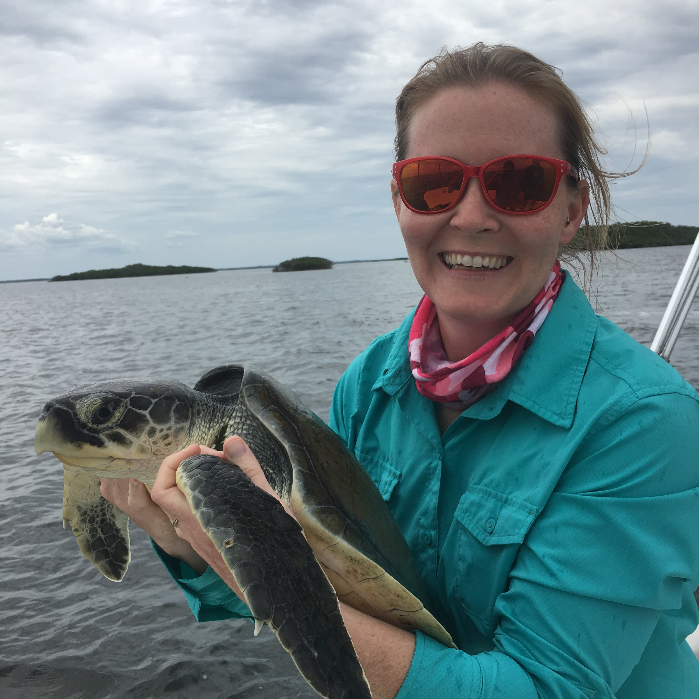

Team
Latest update - 16 October, 2020
Current members
 Dr. Seoghyun Kim, Postdoc
Dr. Seoghyun Kim, Postdoc My research focuses on stream fish ecology and conservation using various techniques such as automated individual tracking techniques and genetic framework. I am interested in (1) how similar fish species co-exist in their sympatric areas, (2) effects of environmental stressors on fish community structure, and (3) how individual traits (e.g., behavior) affect reproductive success. My doctoral dissertation was to characterize reproductive ecology of nest-building stream fish (bluehead chub) and assess the effects of interactions among individuals and their variation on fitness consequences. As a postdoctoral fellow in Dr. Akira Terui’s lab, I am currently handling a huge dataset to understand impacts of various environmental factors on fish metacommunity. More information is in: https://seoghkim.weebly.com/
 Melanie Stadler, Ph.D. student
I grew up in the middle of Kansas, with incredible parents who encouraged my love of nature and wanting to learn about the world around me. While earning a bachelor’s degree in Biology from UNCG, I was introduced to the world of turtle and tortoise biology and conservation. I earned an MS in Biological Sciences and GIS certificate from Florida Atlantic University, studying the habitat and foraging ecology of juvenile green turtles on nearshore reefs in Florida. Prior to returning to North Carolina, I worked as a Sea Turtle Biologist in Florida for eight years where I supervised two nesting beach programs, participated in some amazing research projects, and managed the overhaul and daily operations of two sea turtle rehabilitation centers. I am interested in spatial ecology, ecological biogeography, and habitat connectivity, especially in turtles and other herp species. I am excited to be part of UNCG’s Department of Biology, Environmental Health Science PhD program, and I plan to focus my PhD research on threatened bog turtles and their wetland habitat in North Carolina. I live with my husband, Brian, our bearded dragon, and two dog children in Greensboro. In my spare time, you will find me running or biking on one of our extraordinary local hiking trails, birdwatching, curled up with a good book, or in the kitchen experimenting with a new vegetarian recipe.
I’m interested in spatial ecology in general. My research career started at the University of Tokyo where I studied metapopulation structure of the endagered freshwater mussel Margaritifera laevis. After obtaining Ph.D., my research interests expanded. Thus far, I studied freshwater mussels, fish, aquatic and terrestrial insects, plants, and seabirds in collaboration with excellent researchers across the globe. While my research spans across multiple taxa, all tied with a common thread - space. More recently, I started using mathematical approaches and try to integrate theoretical and field research. I’m a lover of streams, tennis, and programming in R. Small gardening became one of my hobbies during quarantine.
Former Undergraduate Students
- Jakayla Clyburn (Fall 2019 - Spring 2020)
- Kirsten Watson (Fall 2019)
NOTE: Team members are alphabetically ordered